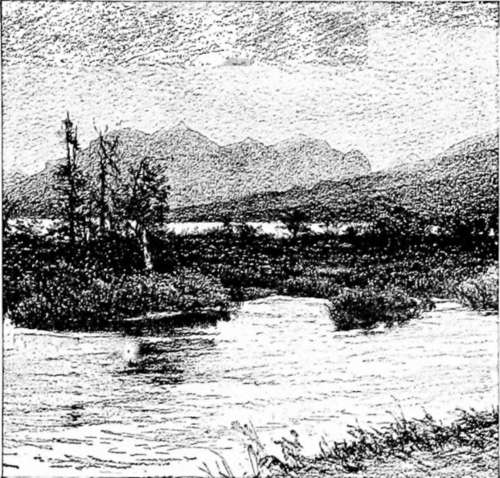

At Saint Mary's
Description
This section is from the book "Hunting", by Archibald Rogers. Also available from Amazon: Hunting.
At Saint Mary's
PERMANENT camp had finally been made, and our four "conical walls" were pitched on the immediate bank of the St. Mary's River, a few hundred yards from the point where that stream gives outlet to the waters of the upper St. Mary's Lake.
The river flowed, swift and cold, past our very doors; and from the latter we looked out to the south, and feasted our eyes on Divide, Kootenai, and Red Eagle Mountains, each noted for some remarkable incident, the story of which we had been many times told already by our loquacious guide, who had joined our party two days before.
Ten days or so previous to this, had one been spending a day at the military post of Fort Assiniboine, Mont., —which one never does, — he might have seen departing therefrom a column of dusky horsemen, followed by several six-mule teams drawing heavy red wagons, and headed by two suspicious-looking men on horses branded "U.S."
The horsemen were a detachment of "F" Troop, Tenth United States Cavalry; the wagon-train consisted of four "army wagons complete;" and the two evil-looking men at the head of the column were myself and a much better man, Lieutenant Letcher Hardeman of the Tenth Regiment United States Cavalry.
This party left the post one hot day late in the summer of 1894; and seven days later, having made an interesting march over two hundred miles of Montana soil, it appeared at Blackfoot station on the Great Northern Railroad. There it was joined by a party of eight gentlemen who had arrived that day on the west-bound train; and from there the united parties proceeded toward the Rocky Mountains, which, looming up in the hazy air, fogged by smoke from the numerous prairie fires, looked big and formidable, and but a stone's throw away.
But a good part of three days were consumed in reaching those mountains. Though they did seem near at hand, they proved to be fifty miles distant by road.
On the third day an early camp was made on the St. Mary's River; and as this seemed to be about as far as wagons could go in these parts, here we concluded to make our permanent headquarters during our week's sojourn in these mountains.
And so, with our tent doors facing the stream and but twenty feet away from its waters, here in this beautiful valley we went into camp and were happy.
Preparations were immediately made for sport. Rods, reels, and lines were soon assembled, shotguns unpacked, belts filled with ammunition; and in an hour the enthusiastic sportsmen of the party were enjoying themselves with that intense pleasure known only to the eager angler or hunter when he finds himself in a preserve rich with his especial game.
But of that party two members were not out for fish or small game. Hardeman and I had decided at the outset to kill a Rocky Mountain sheep, —a "big horn;" and not only had we so decided, but we had so asserted. We might condescend to catch a few trout or to shoot a few grouse in our spare moments, —pour passer le temps, —but the business of our life while in these mountains would be mutton — wild mutton.
In this Beautiful Valley we went into Camp.
The members of our party were nice gentlemen, and treated our youthful vapor-ings with a serious attention that pleased us. Even our guide, a thirteen-year resident of this locality, did not smile; but contented himself with saying that he had known "a few gentlemen to miss them sheep at thirty yards the first time they got a shot at them," but that he guessed "these West Point boys knew how to shoot a gun, and how to keep their nerve when in sight of big game."
We came to know more about that guide and "nerve" and things later on.
But it did seem ridiculous to hear of a man's getting a shot at a mark the size of a sheep, and missing it at fifty yards. The wonder was how he could miss at all — where his bullet could go and not hit — at that range. We were not troubled.
Give us a shot anywhere within one, yes, two, hundred yards, and we would answer for the result. Had we not been qualifying as sharpshooters in our regiments for several years past? Had we not already demonstrated to our party our skill in aiming and our accuracy in judging distance by breaking innumerable bottles as they floated down the streams on which we had camped en route?
As to "losing our nerve" — oh, well, that was simply absurd. We were not troubled.
The day after our arrival in camp was Sunday, and a day of rest (we numbered two clergymen among us); but two of the. party returning in the evening from a climb over the nearest mountain, Flat Top, raised our hopes to a high degree by telling us of six sheep they had seen on their ride.
Monday morning Hardeman and I started for Flat Top.
We were armed with the regulation Springfield carbine, and each wore a field-belt full of ammunition. A field-belt holds forty rounds, and when full is heavy. But it was well, we thought, to go on such an expedition well equipped. We reasoned how badly we should feel, if, having exhausted our supply, we ran on to more game. Oh, no, it would not do to go without plenty of ammunition. So we left no vacant thimbles in our belts.
When mounted and ready to start, our guide pointed out the direction to be taken, and assured us that we could not possibly get lost; for, after reaching the timber, we would follow a "plain, blazed trail, clean up."
Then, as he wished us good luck, he smiled.
There was a drizzling rain. It was early in the morning, and cold. The grass was high in the ravines; and by the time we had reached the lower line of timber we were wet through as high as the waist, and not dry above. We now entered the thick timber, and the upper half of the body began to feel the dampening effect of the numerous shower-baths shaken from dripping boughs above.
Continue to: